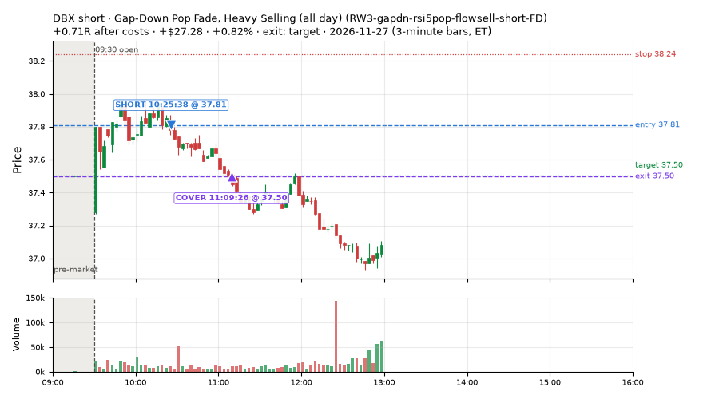
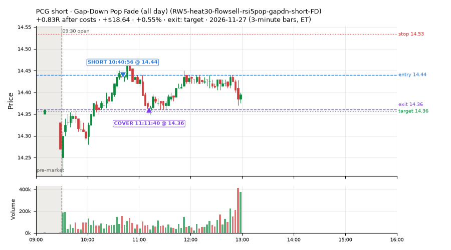
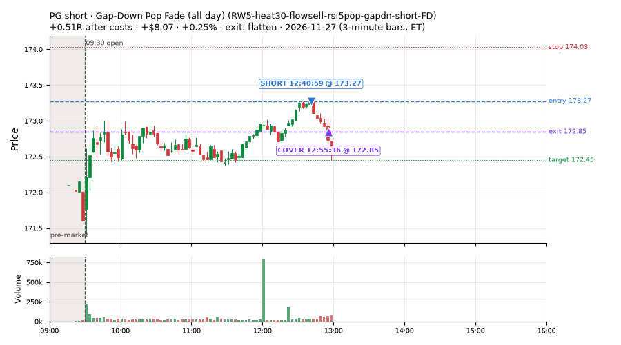
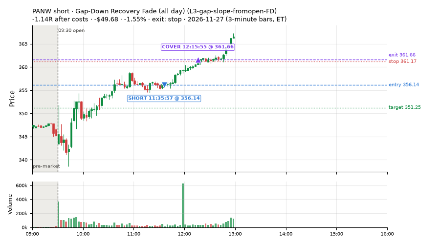
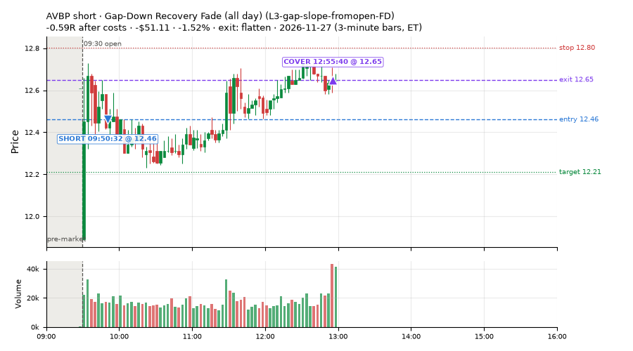
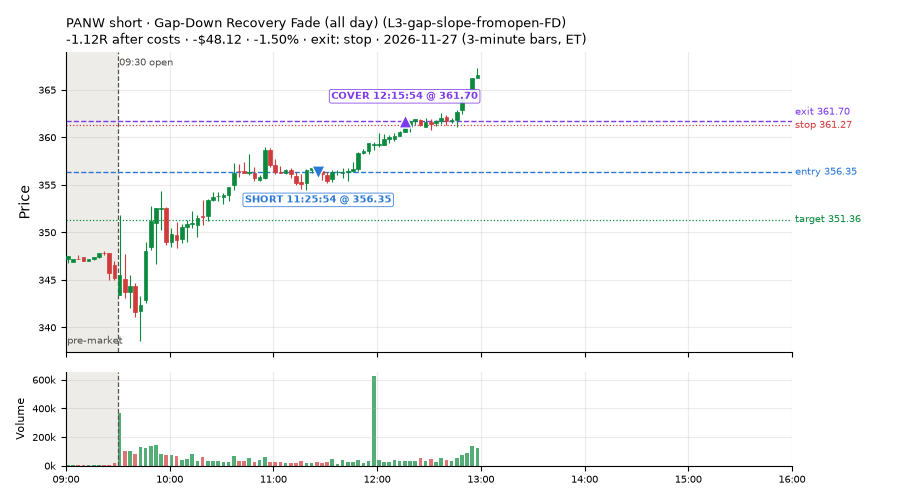
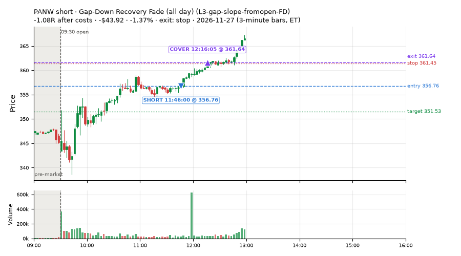
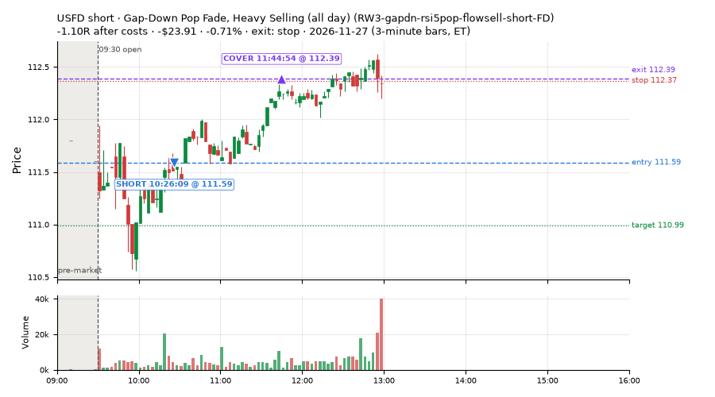

15 trades · win rate 20% · P/L $-204.17
PROBATION: no live setup has passed both locked test periods. 10 owner-directed setups added 2026-10-08 (MarcoFlow top 5 + 5 new), untested live. RW6G1 (RW6 + VWAP band guard) added 2026-10-09, probation.

| Symbol | Setup | Side | In | Out | Entry | Exit | Exit reason | % gained | P/L |
|---|---|---|---|---|---|---|---|---|---|
| DBX | Gap-Down Pop Fade, Heavy Selling (all day) (RW3-gapdn-rsi5pop-flowsell-short-FD) | short | 10:25 | 11:09 | 37.81 | 37.50 | target | +0.82% | $27.28 |
| PCG | Gap-Down Pop Fade (all day) (RW5-heat30-flowsell-rsi5pop-gapdn-short-FD) | short | 10:40 | 11:11 | 14.44 | 14.36 | target | +0.55% | $18.64 |
| PG | Gap-Down Pop Fade (all day) (RW5-heat30-flowsell-rsi5pop-gapdn-short-FD) | short | 12:40 | 12:55 | 173.27 | 172.85 | flatten | +0.25% | $8.07 |
| Symbol | Setup | Side | In | Out | Entry | Exit | Exit reason | % lost | P/L |
|---|---|---|---|---|---|---|---|---|---|
| PANW | L3-gap-slope-fromopen-FD | short | 11:35 | 12:15 | 356.14 | 361.66 | stop | -1.55% | $-49.68 |
| AVBP | L3-gap-slope-fromopen-FD | short | 09:50 | 12:55 | 12.46 | 12.65 | flatten | -1.52% | $-51.11 |
| PANW | L3-gap-slope-fromopen-FD | short | 11:25 | 12:15 | 356.35 | 361.70 | stop | -1.50% | $-48.12 |
| PANW | L3-gap-slope-fromopen-FD | short | 11:46 | 12:16 | 356.76 | 361.64 | stop | -1.37% | $-43.92 |
| USFD | RW3-gapdn-rsi5pop-flowsell-short-FD | short | 10:26 | 11:44 | 111.59 | 112.39 | stop | -0.71% | $-23.91 |








Signal to fill: median 1s, 90th percentile 4s (15 trades). Bars close each minute; the order follows the bar close.
Best excursion (MFE): median 0.29R; worst (MAE) median 0.71R. 47% of trades never got +0.25R in our favour; 0 reached +1R and still closed at or below 0.
| Symbol | Setup | Best R | Worst R | Closed R |
|---|---|---|---|---|
| USFD | RW3-gapdn-rsi5pop-flowsell-short-FD | +0.29 | -1.00 | -1.10 |
| PANW | L3-gap-slope-fromopen-FD | +0.24 | -1.03 | -1.12 |
| PANW | L3-gap-slope-fromopen-FD | +0.14 | -1.05 | -1.14 |
| AVBP | L3-gap-slope-fromopen-FD | +0.68 | -0.82 | -0.59 |
| PANW | L3-gap-slope-fromopen-FD | +0.09 | -1.03 | -1.08 |
| Entry time | Trades | Win | Avg R | P/L |
|---|---|---|---|---|
| 09:50-10:30 | 5 | 20% | -0.38 | $-55.90 |
| 10:30-11:30 | 7 | 14% | -0.30 | $-62.74 |
| 11:30-13:00 | 3 | 33% | -0.57 | $-85.53 |
| Setup | Trades | Win | Avg R after costs | Adj R (net of SPY) | Avg R ex-market (all sessions) | P/L |
|---|---|---|---|---|---|---|
| Gap-Down Recovery Fade (all day) (L3-gap-slope-fromopen-FD) | 7.0 | 0% | -0.77 | -0.57 | -0.08 (beta -0.68, n 238) | $-205.83 |
| Gap-Down Pop Fade, Heavy Selling (all day) (RW3-gapdn-rsi5pop-flowsell-short-FD) | 5.0 | 20% | -0.29 | +0.00 | -0.06 (beta -0.86, n 204) | $-20.80 |
| Gap-Down Pop Fade (all day) (RW5-heat30-flowsell-rsi5pop-gapdn-short-FD) | 3.0 | 67% | +0.39 | +0.42 | -0.05 (beta -0.60, n 205) | $22.46 |
Market direction (SPY, beta 1) accounted for $-83.89 of today's $-204.17; the rest ($-120.28) came from the setups themselves. Avg R net of SPY: -0.18 (incl. a hedge leg's cost; report only).
4 setups live today. Today: 50 signals, 15 taken, 7 lost because another setup held the symbol (14%). Since 2026-10-06 (38 sessions): 11832 signals, 1533 taken, 215 lost to other setups (2%). Peak open positions today 11 of 77 slots. Earnings blackout removed 138 symbols before scanning.
Simulated playing time (not live): 10270 what-if trades of signals not taken, avg -0.17R, 44% winners; of them 215 lost to another setup (avg -0.13R).
Silent: intraday_momentum · Crowded out: MF4-h40-open-flowsell, MF3-open-flowsell-rsi5hi, MF5-flowsell-vwapup-rsi5hi · Starved: MF2-open-rsimidhi-flowsell
| Prio | Setup | Today sig / taken | Sessions | Signals / taken / trades | Taken/day | Expected/day | Lost to other setups | Lost to (setup n) | Top skip reasons | SIMULATED: not-taken n / avg R / win | Verdict |
|---|---|---|---|---|---|---|---|---|---|---|---|
| 1 | Late-Day ETF Dip Buy (near-miss) NM-ETF-late-dip-di-long | 0 / 0 | 12 | 45 / 35 / 35 | 2.92 | – | 0 | – | daily loss cap 8, spread / quote / size 2 | 10 / +0.17R / 70% | slow 14.6 entries/week; ~4 weeks to 60 trades |
| 2 | Gap-Down Pop Fade (all day) RW5-heat30-flowsell-rsi5pop-gapdn-short-FD | 6 / 3 | 30 | 314 / 205 / 205 | 6.83 | 12.79 | 0 | – | spread / quote / size 51, daily loss cap 32, not shortable / shorts off 25 | 109 / -0.13R / 43% | ok 34.2 entries/week |
| 3 | Gap-Down Pop Fade, Heavy Selling (all day) RW3-gapdn-rsi5pop-flowsell-short-FD | 8 / 5 | 30 | 363 / 204 / 204 | 6.80 | 13.59 | 1 | CWT14-failbrk-pdl-p10-lowvol-long 1 | spread / quote / size 67, daily loss cap 50, not shortable / shorts off 41 | 159 / +0.12R / 58% | ok 34.0 entries/week |
| 4 | Gap-Down Recovery Fade (all day) L3-gap-slope-fromopen-FD | 36 / 7 | 22 | 9130 / 238 / 238 | 10.82 | – | 76 | L3-gap-slope-fromopen-FD 76, L3-gap-slope-rsi5hi-FD 14 | daily loss cap 5636, not shortable / shorts off 2264, per-setup cap 684 | 8883 / -0.19R / 42% | ok 54.1 entries/week |
Every trade is attached as a CSV you can open and edit in Excel or Google Sheets. Live page: https://misiti15.github.io/MCF/live/